1280x720 / 解像度倍率1.0 / ヘッドレス Chromium（Apple Silicon Mac）。
視点1=スタート部屋正面（掲示板）、視点2=区画Bの通路、視点3=暗所帯 dz_B の入口（ヘッドライト点灯）。
?q=high|mobile|fallback|off で段階を強制、?cam=1|2|3 ?stats=1 ?bench=1 が監査用。
off は P4.16 までの見た目（比較の基準）。
| 段階 | 視点 | 暗部<40 (35〜65%) | 中間40-120 (≥20%) | 白飛>200 (<3%) |
burst ms | fps | 描画コール | 三角形/frame | GPU増分MB | world三角形 | build ms |
|---|---|---|---|---|---|---|---|---|---|---|---|
| off（P4.16） | 視点1 | 37.4 | 61.1 | 0.00 | 2.90 | 345 | 281 | 68,322 | 0 | 466,972 | 799 |
| 視点2 | 68.6 | 31.4 | 0.00 | 4.25 | 235 | 425 | 177,264 | ||||
| 視点3 | 52.0 | 48.0 | 0.00 | 2.80 | 357 | 378 | 122,906 | ||||
| high（Y＋Z・6灯） | 視点1 | 42.3 | 48.2 | 2.00 | 4.94 | 202 | 281+1 | 68,322 | 32.7 | 466,972 | 1,018 |
| 視点2 | 61.2 | 37.2 | 0.07 | 6.74 | 148 | 425+1 | 177,264 | ||||
| 視点3 | 47.6 | 48.4 | 0.07 | 5.93 | 169 | 378+1 | 122,906 | ||||
| mobile（Y＋Z・4灯・法線1/4） | 視点1 | 50.8 | 45.1 | 1.83 | 4.60 | 217 | 281+1 | 68,322 | 13.7 | 466,972 | 933 |
| 視点2 | 63.2 | 35.0 | 0.07 | 6.00 | 167 | 425+1 | 177,264 | ||||
| 視点3 | 44.8 | 52.0 | 0.07 | 5.21 | 192 | 378+1 | 122,906 | ||||
| fallback（X＋Z） | 視点1 | 36.0 | 55.8 | 0.44 | 3.17 | 315 | 281+1 | 63,936 | 39.1 | 277,140 | 2,755 |
| 視点2 | 64.4 | 32.6 | 0.04 | 4.73 | 212 | 425+1 | 138,834 | ||||
| 視点3 | 41.1 | 56.8 | 0.00 | 4.06 | 247 | 378+1 | 101,926 |
burst ms＝毎フレーム 1px の readPixels で GPU の完了を待たせた「1フレームの実コスト」。fps はその逆数。
GPU増分＝法線・粗さマップ（high 32.1MB／mobile 13.1MB）＋後処理のレンダーターゲット（0.6MB）／
fallback はライトマップ 31.7MB＋テクスチャ。基礎テクスチャ 87.9MB は全段階で共通。
描画コールの「+1」は後処理のフルスクリーン1枚。三角形とコールは high/mobile で現行と同数（+10%以内の契約を満たす）。
赤字＝§3 の数値ゲートを外れている値（現行 off は視点2で 68.6% と既に外れており、Y＋Z はここを満たす側に入った）。
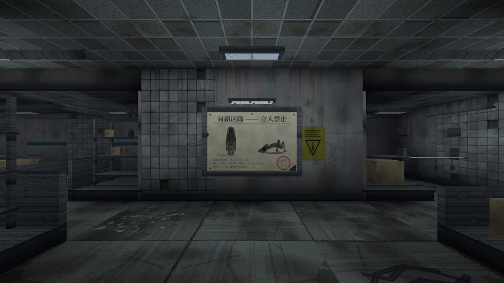
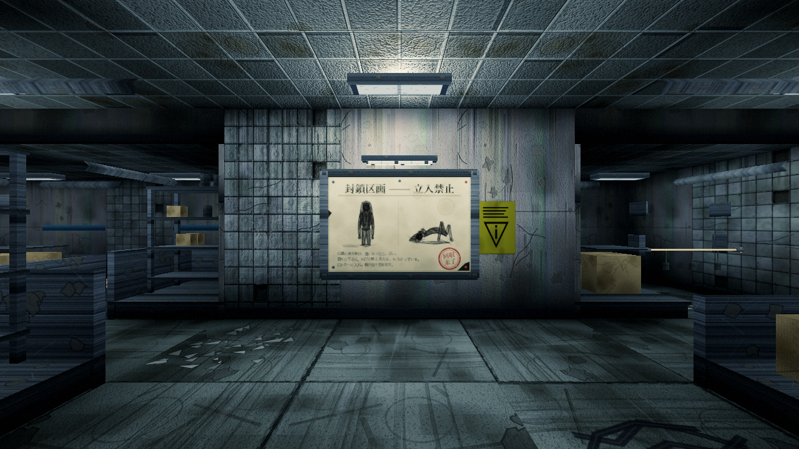
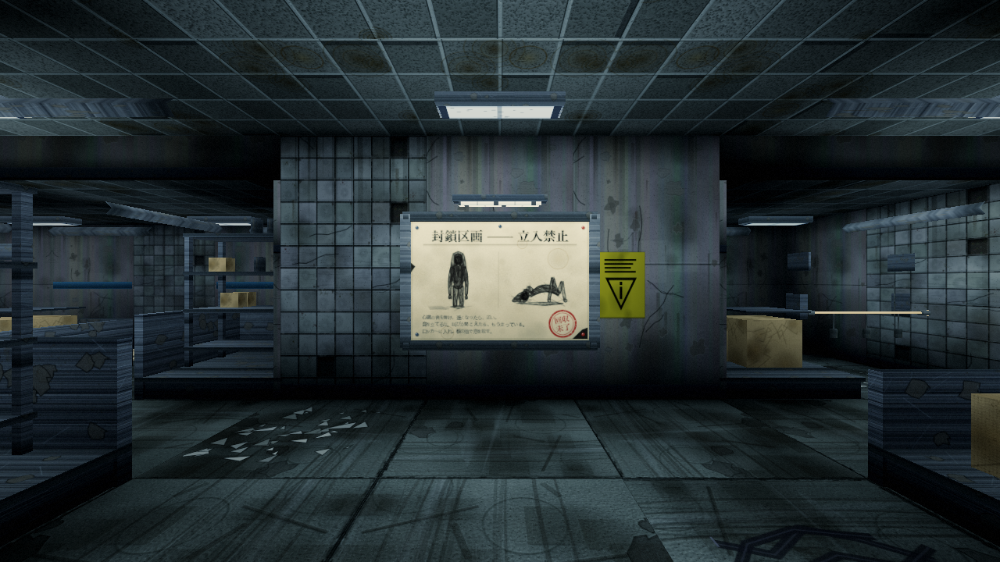
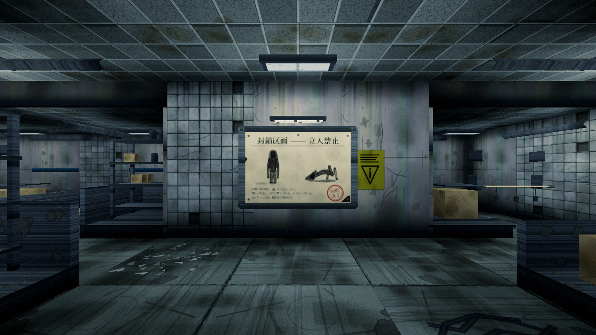
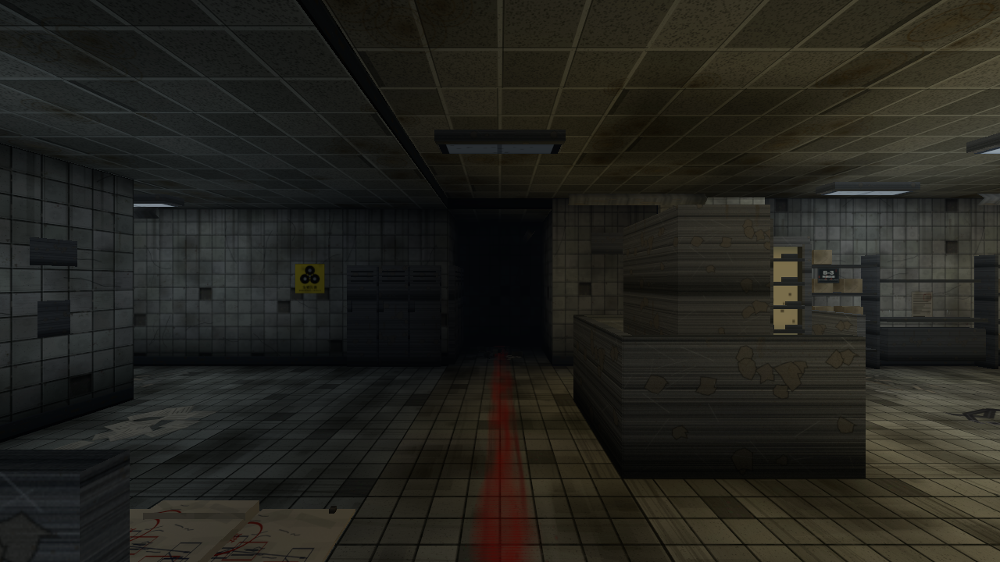
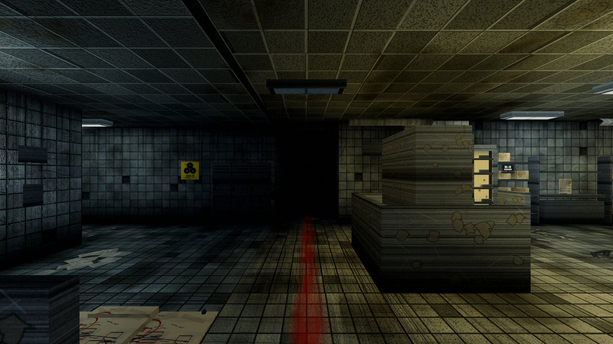
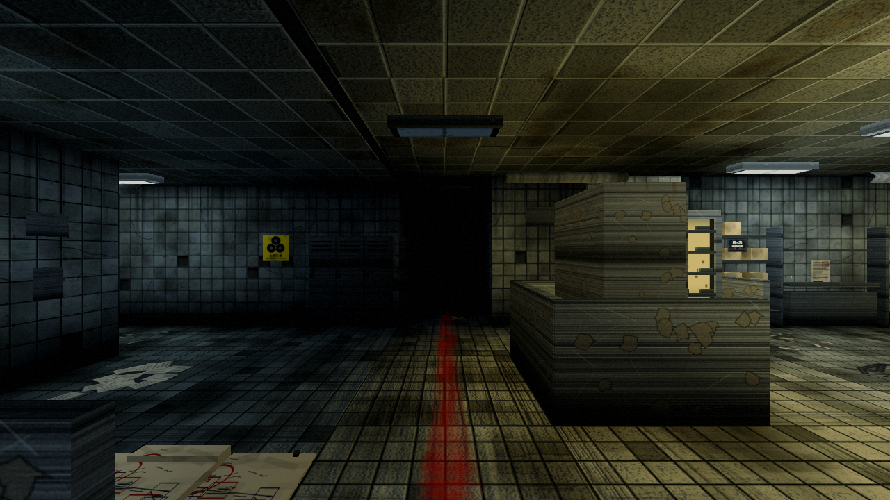
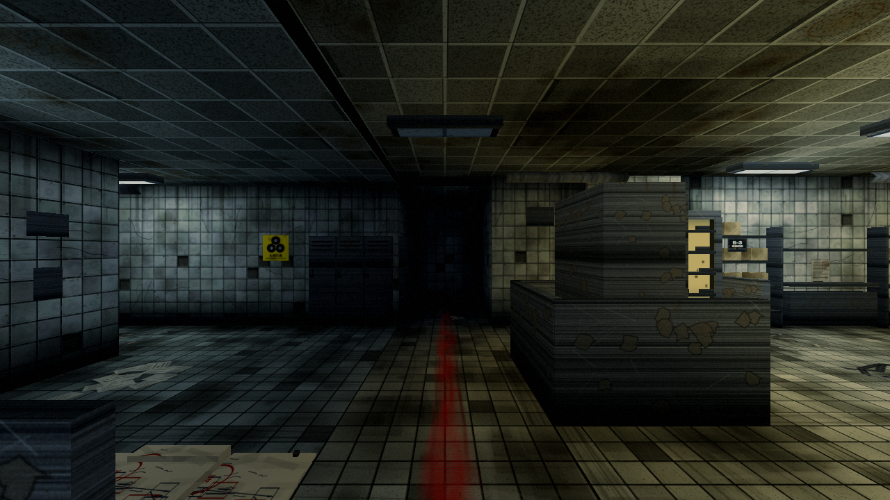
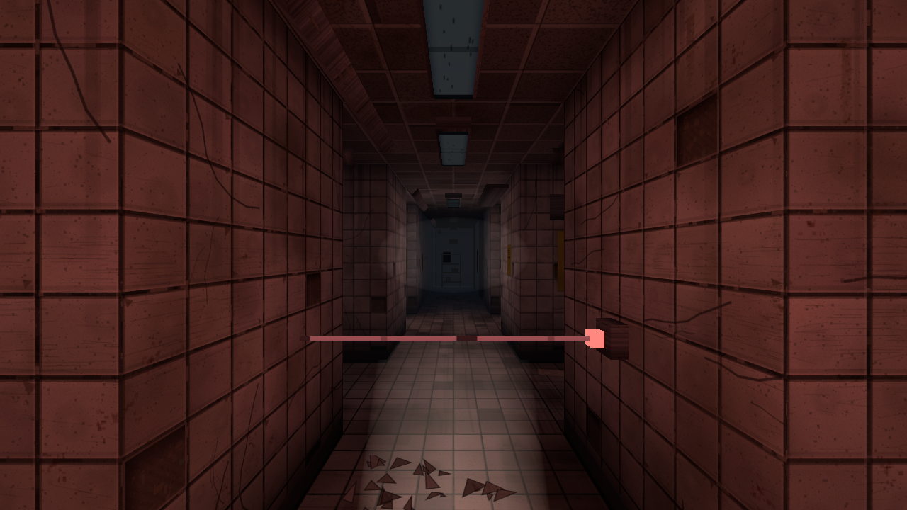
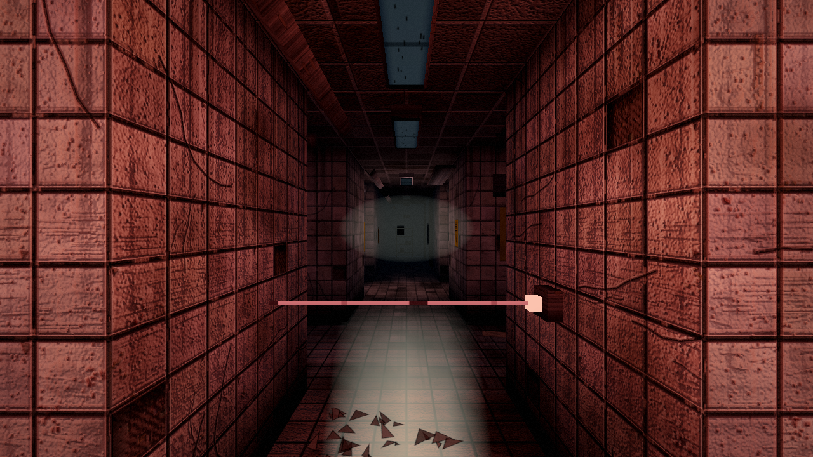
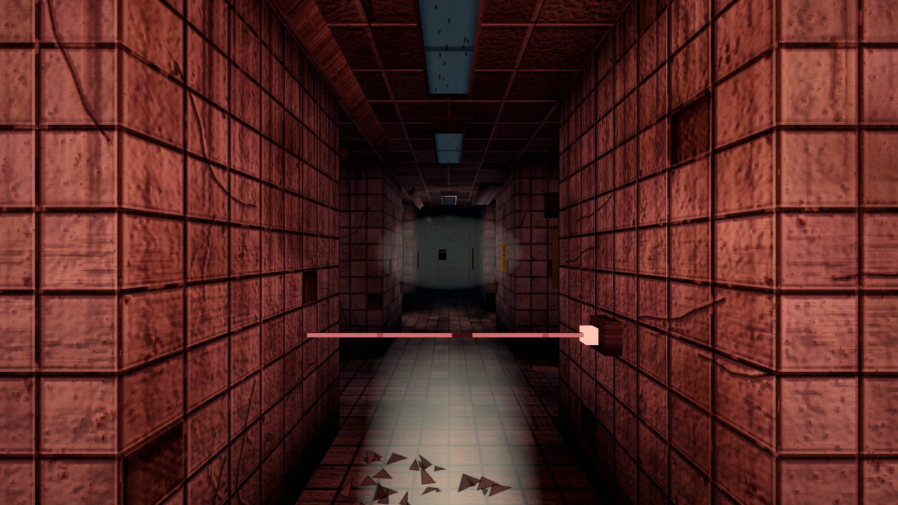
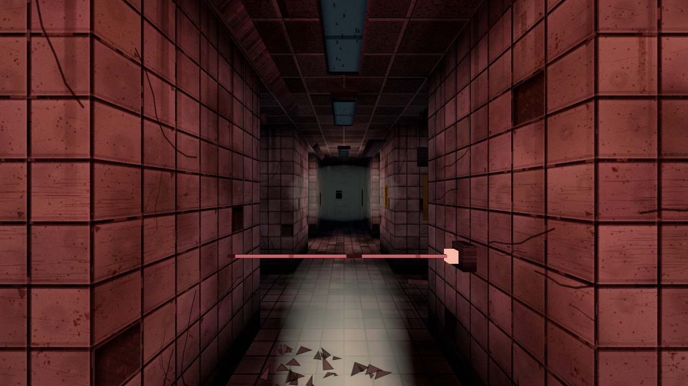